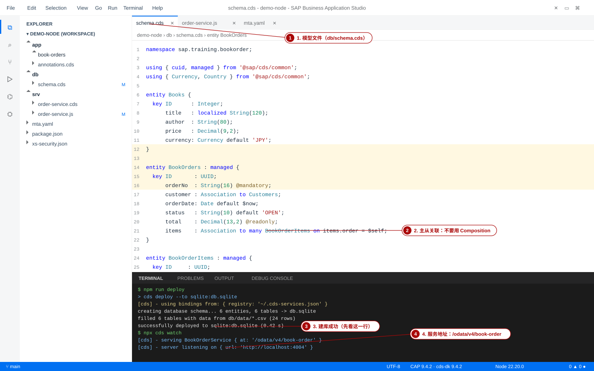
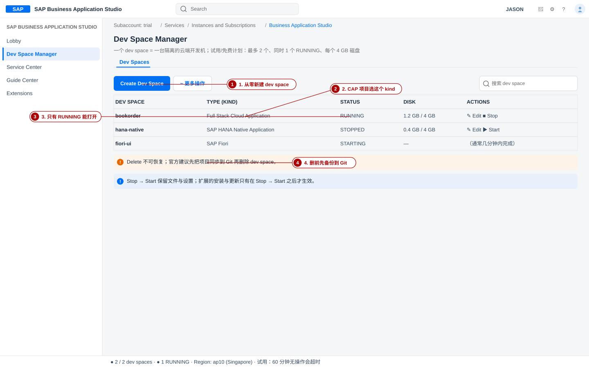
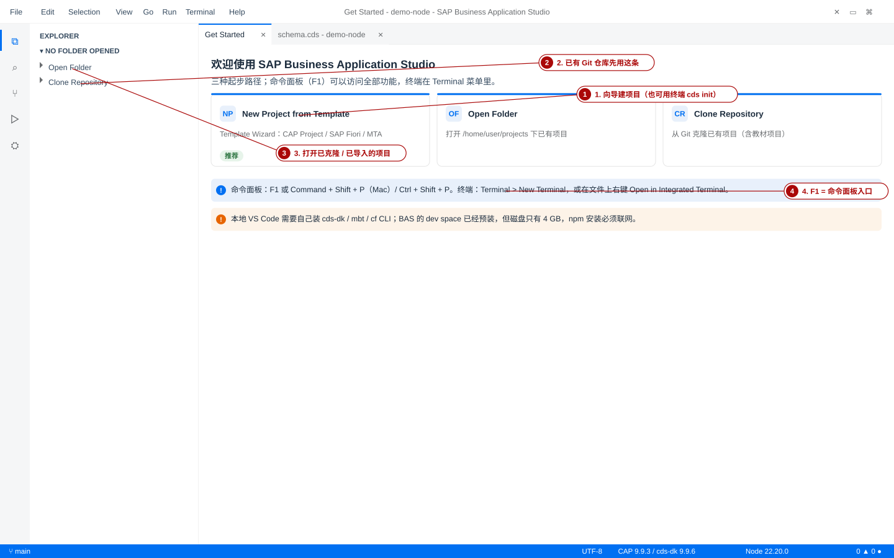
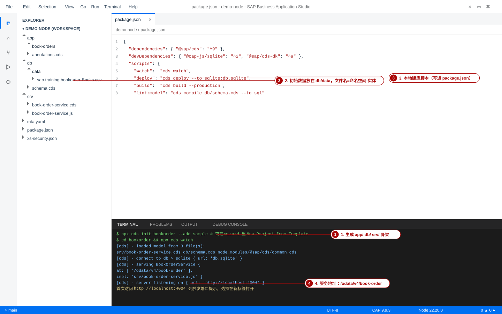
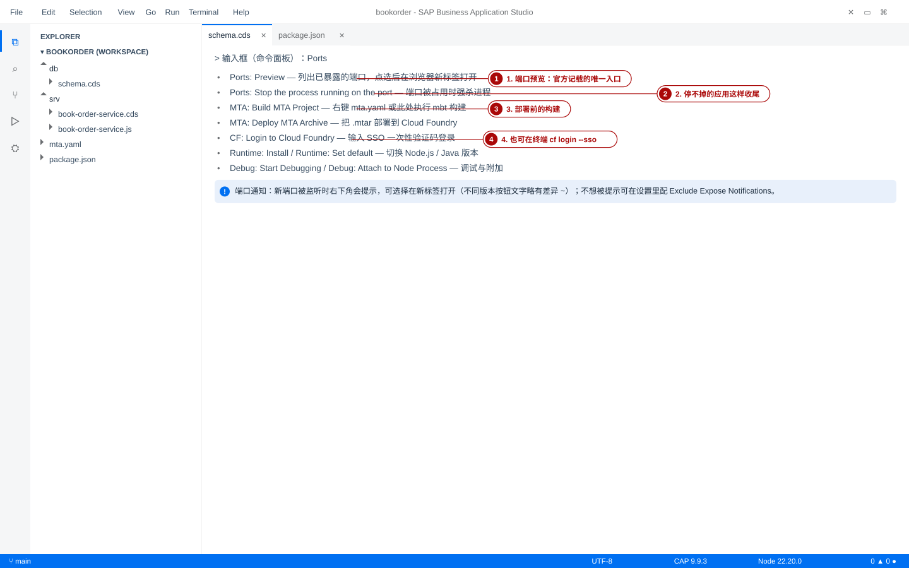
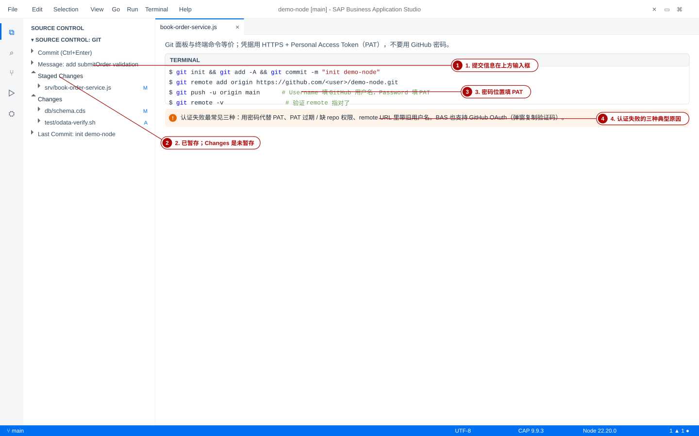
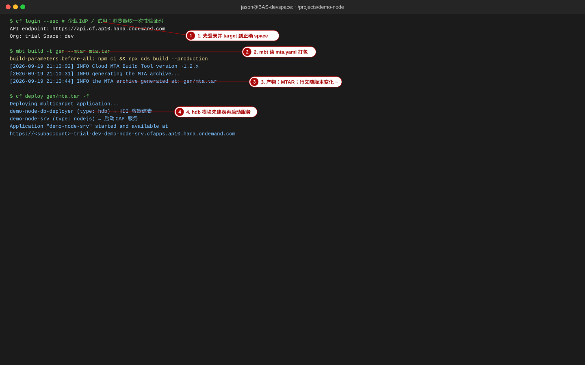
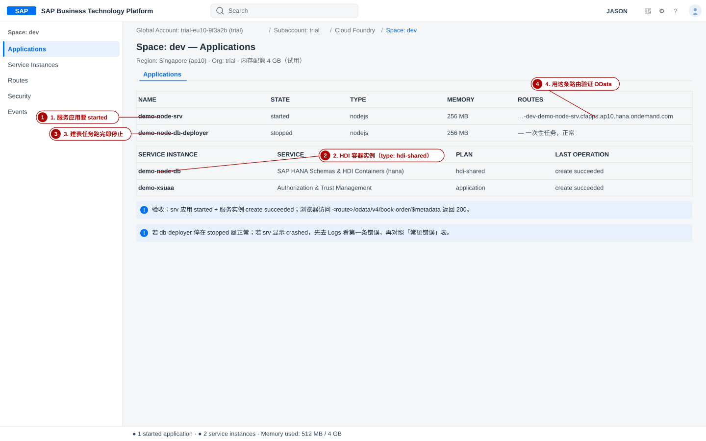
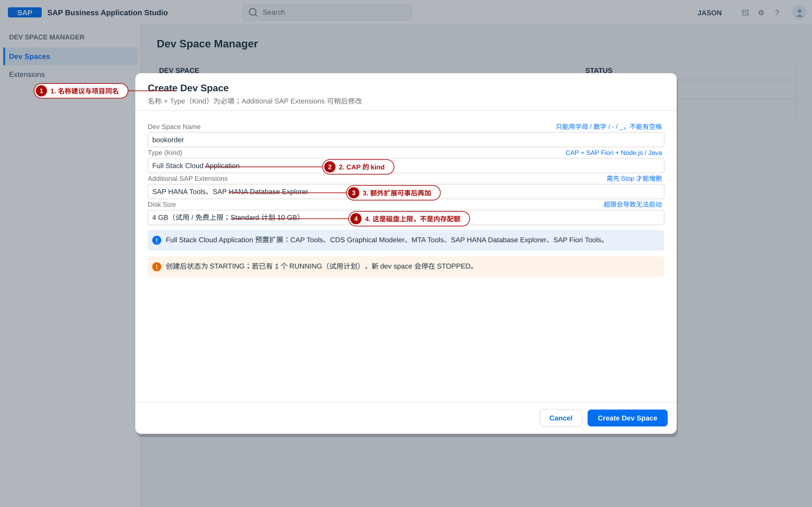
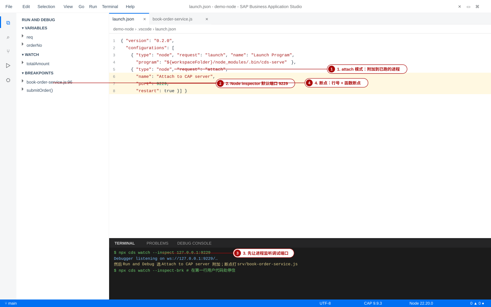

② Business Application Studio 开发环境：从空账户到能部署 CAP 项目
Subaccount 订阅与 Dev Space 创建 → 界面与端口预览 → cds init 建项目 → 终端 / 调试 / Git → mbt build + cf deploy → cockpit 验证。每步都给出「验证」与失败现象。
- 在 trial 子账户里确认 BAS 订阅，并创建一个能跑 CAP 的 Dev Space（知道 2 个 / 1 个 RUNNING / 4 GB 这些硬限制来自哪里）。
- 用 cds init 或 Template Wizard 生成 app/ db/ srv/ 骨架，并说清每个目录放什么。
- 在 BAS 终端里跑起本地服务、把 4004 端口暴露到浏览器、用 launch.json 附加调试。
- 把项目推到 GitHub（HTTPS + Personal Access Token），并说出认证失败的三种典型原因。
- 用 mbt build 生成 MTAR、cf deploy 部署，再在 cockpit 里核对应用与服务实例状态。
- 遇到 dev space 起不来 / npm ERR! / 端口打不开 / 会话超时 / 配额不足 / 扩展冲突时，能按错误表定位。
1. 本页地图与选型对照
本页是一条「开发环境」主线：先把环境建出来（第 2 节） → 认清界面与能力边界（第 3 节） → 把项目建出来（第 4 节） → 能跑能调（第 5–6 节） → 能存进 Git（第 7 节） → 能部署并在 cockpit 验收（第 8–10 节）。第 11 节之前遇到的报错，都能在第 11 节的错误表里查到处置办法。
Instances and Subscriptions
Full Stack Cloud Application
app/ db/ srv/
localhost:4004
HTTPS + PAT
MTAR → CF
1-1 BAS 与「本地 VS Code + Node.js」的关系
一句话：BAS 不是替代 VS Code，而是替代「装环境 + 配工具链」这件事。BAS 基于 Code-OSS（VS Code 的开源底座），所以菜单、命令面板、launch.json、Git 面板的行为与 VS Code 一致；差别在于它跑在云端的 dev space 里，工具是预装的、配额是受限的、断网就停摆。
| 维度 | BAS（云端 Dev Space） | 本地 VS Code + Node.js |
|---|---|---|
| 安装成本 | 订阅后即可用；CAP Tools、MTA Tools、CF CLI、cds-dk 由场景预装 | 自己装 Node.js、npm i -g @sap/cds-dk、mbt、cf CLI 与 MTA 插件 |
| 资源限制 | 试用/免费：最多 2 个 dev space、同时 1 个 RUNNING、每个 4 GB 磁盘；Standard 计划 10 个 / 2 个同时 / 10 GB | 取决于本机（内存、磁盘、CPU） |
| 网络依赖 | 全程联网；npm install、扩展安装、数据库连接都走网络 | 装好依赖后可离线开发 |
| 扩展 | 场景扩展 + 额外 SAP 扩展可选；VS Code 市场扩展在远程连接模式下也能用（第三方扩展可读 dev space 数据） | VS Code 市场扩展自由安装 |
| 调试 | 内置 Node.js 调试（launch / attach），cds watch --inspect 127.0.0.1:9229 后附加 | 同样支持；也可本机直连调试 |
| 访问本地资源 | 访问本机文件、内网系统要绕（Cloud Connector / 目的地） | 直连本机与内网 |
| 协作与还原 | 换设备即可继续开发；dev space 停止后文件与设置保留 | 依赖 Git 与本地备份 |
| 推荐用法 | 教学、临时环境、需要 SAP 预置工具链、需要在客户环境里开发 | 长期主力开发、需要离线或重度的本地调试 |

2. 创建 Dev Space（手顺）
2-1 前置：确认订阅与角色
- 确认 Cloud Foundry 环境已启用：cockpit → Subaccount → Overview，看到 Cloud Foundry Environment 段与至少一个 Space（例：dev）。这一步必要，因为后面 cf deploy 要落在这个 org/space 里。
- 确认订阅：Subaccount → Services > Service Marketplace，搜索 Studio，打开 SAP Business Application Studio 的 Overview 页 → Create → 选计划（trial / free / standard）→ 再点 Create。若已订阅，跳下一步。
- 确认权限：Security > Role Collections，当前用户应有 Business_Application_Studio_Developer（管理 dev space 另需 Administrator 角色集合）。
- 进入 BAS：回到 SAP Business Application Studio 的 Overview 页 → 点 Go to Application。
text
Subaccount: trial Services > Instances and Subscriptions ← 订阅记录在这里 Services > Service Marketplace > 搜索 Studio ← 没有订阅时从这里 Create SAP Business Application Studio > Overview > Go to Application ← 进入 BAS - 验证：浏览器打开 BAS 的 Lobby（含 Quick Links 的 Get Started 页），URL 形如 https://<subaccount>.<region>.applicationstudio.cloud.sap/。若停在授权页反复跳转，先确认上一步的角色集合已生效，再清 Cookie 重进。
2-2 Create Dev Space：字段逐个说清楚
- 打开 Dev Space Manager：Lobby 右上角产品切换图标 → Dev Space Manager，或 Get Started 页 Quick Links 里的同名链接。
- 点 Create Dev Space，依次填：名称（只能用字母/数字/-/_，不能有空格；建议与项目同名，如 bookorder）、Type（Kind）、Additional SAP Extensions（可多选）。数据库类 kind 的取舍见下表。
- 看清磁盘上限：dev space 是「磁盘」受限而不是内存受限——试用/免费 4 GB、Standard 10 GB。超限的表现是 npm/build 报 No space left on device，严重时 dev space 起不来。
- 点 Create Dev Space（名称未填时按钮不可用），状态会从 STARTING 变 RUNNING；点 dev space 名字进入。
- 验证：Dev Space Manager 列表里该 dev space 的 STATUS = RUNNING，点进去后左侧 EXPLORER、底部 TERMINAL、状态栏（Node 版本、Git 分支）都出现；终端里 pwd 返回 /home/user/projects。
| Type（Kind） | 用途 | 本课程是否用 |
|---|---|---|
| Full Stack Cloud Application | CAP（Node.js / Java）+ SAP Fiori 的常规场景；预置 CAP Tools、CDS Graphical Modeler、MTA Tools、SAP HANA Database Explorer、SAP Fiori Tools | 推荐本课程第 2–12 节都用它 |
| SAP Fiori | 只做 Fiori / UI5 前端（含 ABAP Cloud、S/4HANA 连接场景） | 第 9 节做 UI 时可以另开一个 |
| SAP HANA Native Application | 原生的 HANA 工件（calculation view、SQLScript、表）开发 | 可选：需要 Database Explorer 与 HANA Tools 时 |
| Full-Stack Application Using Productivity Tools | 低代码/生产力工具场景 | 不用 |
| Basic | 只有 SAP 基础工具，最轻量 | 只做 shell 练习时可用 |
- Dev Space Manager 里能看到你的 dev space，STATUS = RUNNING，Type = Full Stack Cloud Application。
- 能进入 dev space，终端可执行 node --version 并返回版本号。
- 知道三个硬限制的数字：最多 2 个 dev space、同时 1 个 RUNNING、每个 4 GB 磁盘（试用/免费计划）。
- Create Dev Space 按钮点不动：名称没填。文档明确写明只有填了名称按钮才可用。
- 新建的 dev space 停着不动（STOPPED）：已经在跑 1 个（试用）或 2 个（Standard）。先 Stop 另一个再 Start 这个。
- 状态长期卡在 STARTING：等 5 分钟后重试；仍不行就新建一个 dev space，用 Git 把项目拉回来，并把旧 dev space 的 ws-id 报给 SAP 支持。
- 改了扩展却看不到效果：扩展的增删与更新都要求先 Stop，保存变更后再 Start。
- 手滑点了 Delete：不可恢复。所以第 7 节要求先把项目推到 Git。

3. 界面导览与取舍
3-1 五个必须先认识的位置
| 位置 | 怎么打开 | 本课程怎么用 |
|---|---|---|
| EXPLORER（文件树） | 左侧活动栏第一格；未打开项目时显示 NO FOLDER OPENED | 确认 db/ srv/ app/ 结构与 db/data/*.csv |
| TERMINAL | 菜单 Terminal > New Terminal；或在文件上右键 Open in Integrated Terminal | 所有 cds / mbt / cf / git 命令都在这里跑 |
| 命令面板 | F1，或 Command + Shift + P（Mac）/ Ctrl + Shift + P | 端口预览、MTA 构建部署、CF 登录、运行时切换、调试 |
| 端口 / 预览 | 命令面板输入 Ports: Preview | 把 localhost:4004 暴露成一个浏览器标签 |
| Run and Debug / PROBLEMS | 左侧活动栏「▷」；菜单 View > Problems | 调试附加；看 .cds 的红线与警告 |
3-2 端口转发：两条都走一遍
- 路径 A：命令面板（官方文档记载的唯一入口）：F1 → 输入 Ports: Preview → 列表里点要预览的应用 → 在新标签打开。
bash
# 1) 先让服务监听端口 npx cds watch # 2) 命令面板（F1）输入：Ports: Preview # → 列表出现 http://localhost:4004 → 点选 → 浏览器新标签打开 # 3) 端口被占用（上一个进程没死干净）时： # 命令面板 → Ports: Stop the process running on the port → 选 4004 - 路径 B：端口通知：新端口第一次被监听时，右下角会出现提示条，可直接在新标签打开。不同版本提示条上的按钮文字略有差异（~），以实际显示为准；不想被反复提示可在 Settings 里搜 Ports → Exclude Expose Notifications → Edit in settings.json 里配置端口。
- 验证：浏览器打开 http://localhost:4004 能看到 CAP 欢迎页；打开 /odata/v4/book-order/$metadata 返回 XML；再打开 /odata/v4/book-order/BookOrders 返回包含 BO-1001 的 JSON。
3-3 BAS 与本地开发的取舍（什么时候该换回本地）
- 环境一致性优先：全班/全组拿到的是同一套预装工具链。
- 需要 SAP 侧的预置能力：CDS Graphical Modeler、SAP HANA Database Explorer 扩展、MTA Tools。
- 要在客户环境/受限终端上开发，本机不能装 Node。
- 需要「换台电脑就能继续」。
- 磁盘吃紧：node_modules + 构建缓存很容易顶到 4 GB（用 df -h / df -ih 看）。
- 需要稳定的长时调试或高频热重载（网络抖动会打断）。
- 需要访问本机文件、内网数据库或本地设备。
- 需要 VS Code 市场里的第三方扩展与自定终端体验。
还有个折中方案：用本地 VS Code 远程连到 BAS 的 dev space。装 SAP 官方的 SAP Business Application Studio toolkit 扩展，在 VS Code 里 Connect Landscape 添加 BAS 环境地址，就能在本地 VS Code 里使用云端 dev space 的工具链（含 SAP 内部目的地）。注意：远程模式安装的第三方扩展可以访问 dev space 里的数据，公司项目里要先过安全评审。
- 能说出「Ports: Preview」与「Ports: Stop the process running on the port」两条命令分别解决什么问题。
- 能把 http://localhost:4004/odata/v4/book-order/$metadata 在浏览器里打开并看到 XML。
- 写出至少两条「这个项目应该换回本地 VS Code」的理由。

4. 创建 CAP 项目
4-1 两条路：向导与终端
- 路径 A：Template Wizard：Get Started → New Project from Template → 选 CAP Project → 填项目名（例 demo-node）→ 选 Minimal Sample → Finish。向导会同时建好项目并打开工作区。
- 路径 B：终端 cds init（可复现、可写进脚本，推荐教学用）：
bash
# 在 /home/user/projects 下创建项目骨架 npx cds init demo-node # 只加最小示例文件（不含 Fiori UI） npx cds init bookshop --add tiny-sample # 示例 + Fiori UI npx cds init bookshop --nodejs --add sample # 已有项目上继续长：加 HANA、MTA、XSUAA 等 cd demo-node npx cds add hana mta xsuaa - 确认目录结构：cds init 生成的是「约定优于配置」的骨架：app/ 放 UI、srv/ 放服务与实现、db/ 放领域模型与初始数据。
demo-node/ ├─ app/ UI 与 Fiori Elements 注解 │ └─ book-orders/ │ └─ annotations.cds ├─ db/ 领域模型与数据库相关内容 │ ├─ data/ │ │ ├─ sap.training.bookorder-Books.csv │ │ ├─ sap.training.bookorder-Customers.csv │ │ ├─ sap.training.bookorder-BookOrders.csv │ │ └─ sap.training.bookorder-BookOrderItems.csv │ └─ schema.cds namespace sap.training.bookorder; 实体定义 ├─ srv/ 服务定义与实现 │ ├─ book-order-service.cds service BookOrderService @path /odata/v4/book-order │ └─ book-order-service.js submitOrder / getOrderTotal / getOrderSummary 的实现 ├─ test/ │ └─ odata-verify.sh 25 项 OData 验证脚本 ├─ package.json 依赖 + scripts + cds.requires 配置 ├─ mta.yaml 部署描述符（cds add mta 生成） └─ xs-security.json XSUAA 授权描述（cds add xsuaa 生成）
- 读一眼 package.json：cds init 会把运行时依赖与脚本写进去，cds add 之后才出现 HANA / MTA 相关配置。下面这份正是本课程示范项目的真实内容（节选）：
json
{ "name": "demo-node", "dependencies": { "@sap/cds": "^9" }, "devDependencies": { "@cap-js/sqlite": "^2", "@sap/cds-dk": "^9" }, "scripts": { "start": "cds-serve", "watch": "cds watch", "deploy": "cds deploy --to sqlite:db.sqlite", "build": "cds build --production", "test": "mocha --reporter spec --timeout 20000 test/*.test.js" }, "cds": { "requires": { "db": { "kind": "sqlite", "credentials": { "url": "db.sqlite" } }, "auth": { "kind": "mocked" } } } } - 验证：终端里 ls 能看到 app/ db/ srv/ package.json；npx cds --version 能打印 cds-dk 与 @sap/cds 版本；npx cds compile db/schema.cds --to sql 能打印出 CREATE TABLE sap_training_bookorder_Books (...)。
- cds: command not found：dev space 里应预装 cds-dk；若无，用 npx cds ... 调用项目本地依赖，或在终端执行 npm i -g @sap/cds-dk。
- 项目建在了错误的层级：终端默认目录是 /home/user/projects，建完记得 cd 进项目根目录再执行 cds watch。
- CSV 没被装载：文件名必须是 <命名空间>-<实体名>.csv（例：sap.training.bookorder-Books.csv），且放在 db/data/。
- EXPLORER 里能看到 app/ db/ srv/ 三个目录与 package.json。
- db/data/ 下有 4 个 CSV，文件名遵循「命名空间-实体」。
- npx cds compile db/schema.cds --to sql 有 CREATE TABLE 输出。

5. 终端命令与调试
5-1 三个最常用命令
- cds watch：本地起服务，文件一改就重启。首次运行会自动建 SQLite 内存库并装载 CSV。
bash
npx cds watch # [cds] - loaded model from 3 file(s): # srv/book-order-service.cds db/schema.cds node_modules/@sap/cds/common.cds # [cds] - connect to db > sqlite { url: 'db.sqlite' } # [cds] - serving BookOrderService { # at: [ '/odata/v4/book-order' ], impl: 'srv/book-order-service.js' } # [cds] - server listening on { url: 'http://localhost:4004' } - npm run deploy（即 cds deploy --to sqlite:db.sqlite）：把模型真的落成一个 SQLite 文件，并装载 db/data/*.csv。
bash
npm run deploy # > init from db/data/sap.training.bookorder-Customers.csv # > init from db/data/sap.training.bookorder-Books.csv # > init from db/data/sap.training.bookorder-BookOrders.csv # > init from db/data/sap.training.bookorder-BookOrderItems.csv # successfully deployed to db.sqlite - cds env：查看「最终生效」的配置（全局默认 + 项目配置 + profile + 环境变量）。判断当前到底连哪个库，永远看它，不看记忆。
bash
npx cds env # 等价于 cds env ls npx cds env get requires.db # 只看 db 的生效配置 npx cds env get requires.db --profile production # 默认：{ "impl": "@cap-js/sqlite", "kind": "sqlite", "credentials": { "url": "db.sqlite" } } # production：{ "impl": "@cap-js/hana", "kind": "hana" } - 验证：npm run deploy 输出里出现 successfully deployed to db.sqlite；随后 npx cds watch 的日志里有 serving BookOrderService 与 server listening on http://localhost:4004 两行。
5-2 在 dev space 里看 SQLite 与日志
- 看 SQLite：db.sqlite 就在项目根目录。至少要知道三件事：(a) 表名是 sap_training_bookorder_Books 这种「命名空间+实体」；(b) 连它的是 @cap-js/sqlite；(c) 一旦切到 production profile，cds env 显示的 impl 会变成 @cap-js/hana。
bash
# 方式一：项目自带的验证脚本（会打印每张表的行数） python3 - <<'PY' import sqlite3 c = sqlite3.connect('db.sqlite') for (s,) in c.execute("select sql from sqlite_master where type='table'"): print(s.split('(')[0].strip()) PY # 方式二：装一个 SQLite 查看扩展（BAS 的 VS Code 市场可装第三方扩展） # 注意：第三方扩展能读取 dev space 数据，公司项目需评审 - 看日志：cds watch 的终端就是主日志（含每条 OData 请求与错误堆栈）；部署后的日志在 cockpit → Space → Applications → 应用 → Logs。第 10 节会用它验证部署。
- 验证：执行上表的第一段脚本，输出里能看到 sap_training_bookorder_Books 与 sap_training_bookorder_BookOrderItems；终端里对一个不存在的订单号调用函数，日志会出现 404 与中文错误消息。
5-3 调试：launch 与 attach
- 让进程监听调试端口（BAS 与本地同样适用）：cds watch --inspect 127.0.0.1:9229；想在用户代码第一行就停住用 --inspect-brk。9229 是 Node.js inspector 的默认端口。
- 建 launch.json：左侧活动栏「▷」（Run and Debug）→ 下拉选 Node.js，BAS 会自动创建 launch.json（默认含 Launch Program / Run Current File / Create JavaScript Debug Terminal）；再 Add Configuration 加一条 attach。
- 附加并打断点：命令面板 Debug: Start Debug ging，或选 Debug: Attach to Node Process；在 srv/book-order-service.js 里点行号左侧打红点（F9 同效），在 VARIABLES / BREAKPOINTS 面板里观察变量。
- 验证：终端出现 Debugger listening on ws://127.0.0.1:9229/…；用浏览器/curl 触发 submitOrder 时执行停在断点行，变量面板能看到 orderNo 之类的值。
- npx cds env get requires.db 打印出 kind: sqlite，加 --profile production 后变成 kind: hana。
- npm run deploy 之后 db.sqlite 出现在项目根目录。
- 断点能在 srv/book-order-service.js 命中，且能单步走到 SELECT 之后。

6. CDS 语法检查与「红线」
6-1 编辑器补全与命令行检查
- 靠编辑器：在 .cds 文件里输入 entity、Association to、@odata.draft.enabled 时，CAP Tools 提供的语言服务会给补全与 hover 文档；被引用实体的字段名也有补全（例：items.order = $self 里的 items）。
- 靠命令行：不确定编辑器是否滞后，就直接编译一遍——编译通过才是硬结论。
bash
# 只编译模型 → 打印 DDL npx cds compile db/schema.cds srv/book-order-service.cds --to sql # 编译成 OData EDMX（看服务暴露了哪些实体/函数） npx cds compile srv/book-order-service.cds --to edmx # 只解析（不生成任何东西），语法错误会直接报行号 npx cds parse db/schema.cds - 看 PROBLEMS 面板：菜单 View > Problems 会汇总所有打开文件里的错误与警告，点条目跳到出错行。
- 验证：故意把 entity Books { 的右花括号删掉，npx cds parse db/schema.cds 会以非零退出码报错并给出行号；恢复后命令静默成功、PROBLEMS 面板清零。
6-2 三种最常见的「红线」
| 红线/报错 | 真正的原因 | 怎么消掉 |
|---|---|---|
| 实体没有主键 | 视图或投影缺少 key。CAP 要求暴露为 OData 实体的对象必须有主键；聚合（group by）结果拿不到主键。 | 给视图加 key（如 key ID）；聚合结果改由服务层函数返回（本项目的 getOrderTotal / getOrderSummary 就是这么做的）。 |
| 自动重定向失败 can't auto-redirect BookOrders:items | 同一个 db 实体被投影到两个服务层实体（BookOrders 与 BookOrderItems 都来自 db.BookOrderItems 的关联），CAP 无法猜出该指向哪一个。 | 在其中一个上显式声明 @cds.redirection.target（本项目标在 BookOrderItems 投影上）。 |
| 引用了不存在的元素 / 类型不匹配 | 改了 db/schema.cds 里的列名，但 srv/ 或 CSV 还是旧名字；或 Decimal(13,2) 的位置填了字符串。 | 用编译确认（cds compile --to sql）→ 同步改 srv/*.cds 与 db/data/*.csv 的表头（CSV 表头必须与实体元素名一致）。 |
- 能用一条命令（cds compile … --to sql）判断模型是否合法。
- 能说出「主键缺失」「自动重定向」「改列名没同步」三类红线的处置动作。
- PROBLEMS 面板在修复后为空。
7. 把项目接进 Git / GitHub
7-1 面板与终端，两条路等价
- 面板路（Git 视图）：左侧活动栏 Git 图标 → Initialize Repository 建本地库 → 在 Changes 区点 + 暂存（文件状态字母：A 新增、M 修改、U 未暂存、D 删除、C 复制/冲突）→ 顶部输入提交信息 → 提交（Ctrl+Enter）→ 更多操作 Remote > Add Remote 填仓库 URL → Push。
- 终端路（可写进脚本、便于教学复核）：
bash
git init printf 'node_modules/\ngen/\n*.sqlite*\n.cdsrc-private.json\n' >> .gitignore git add -A && git commit -m "init demo-node" git remote add origin https://github.com/<你的用户名>/demo-node.git git branch -M main git push -u origin main # Username 提示 → 填 GitHub 用户名的邮箱/用户名 # Password 提示 → 粘贴 Personal Access Token（不是登录密码） git remote -v # 验证：origin 指向正确仓库 - 验证：git status 显示 nothing to commit, working tree clean；git log --oneline -1 有你的提交；浏览器打开仓库 URL 能看到 db/ srv/ 与 package.json，且 node_modules 没被提交。
7-2 凭据：PAT 与 OAuth
| 认证方式 | 怎么用 | 注意 |
|---|---|---|
| HTTPS + Personal Access Token（推荐） | 在 Git 提供方生成 PAT（GitHub：Settings > Developer settings > Personal access tokens），push 时把 PAT 粘到密码位置 | PAT 要定期更新；权限至少要有仓库读写（GitHub 经典 token 需 repo scope） |
| GitHub OAuth | 连接 GitHub 时 BAS 弹窗显示一次性验证码 → 复制并打开 GitHub → 粘贴验证码授权 → 回 BAS 选按会话或按 dev space 保存 | 有开关项可配置（sapbas.git.github.oauth） |
| 凭据缓存 / 存储 | git-credential-cache（内存、短时）或 git-credential-store（dev space 上落盘） | 落盘等于把凭据交给云端环境，敏感仓库慎用 SSH/Basic |
- 用登录密码代替 PAT：GitHub 早已停用密码认证，报错形如 Support for password authentication was removed / Authentication failed。改成 PAT。
- PAT 过期或权限不足：能 git pull（读）但不能 push（写），或 403。重新生成 token 并勾选写权限。
- remote 里带着旧用户名：换账号后仍推到旧地址。用 git remote set-url origin <新地址> 修正，再 git remote -v 核对。
- （企业内网 Git）报 Recei ved HTTP code 502 from proxy after CONNECT：子账户没配 Cloud Connector，需先接线再克隆。

8. 部署前准备：mbt 与 cds build
8-1 先让项目「可部署」
- 加 HANA 与 MTA：cds add hana mta。前者把生产数据库切到 HANA（依赖 @cap-js/hana，并写入 [production] profile），后者生成 mta.yaml。要本地连云端库再加 cds add hana --for hybrid（第 ③ 页会用到）。
- 确认 mta.yaml 内容：cds add mta 生成的结构（本项目真实产物）：
yaml
_schema-version: 3.3.0 ID: demo-node version: 1.0.0 parameters: enable-parallel-deployments: true build-parameters: before-all: - builder: custom commands: - npm ci - npx cds build --production modules: - name: demo-node-srv # Node.js 服务模块 type: nodejs path: gen/srv requires: - name: demo-node-db - name: demo-node-db-deployer # 建表模块（HDI deployer） type: hdb path: gen/db requires: - name: demo-node-db resources: - name: demo-node-db type: com.sap.xs.hdi-container parameters: service: hana service-plan: hdi-shared - 检查 mbt 是否可用：终端执行 mbt -v。Full Stack Cloud Application 的 MTA Tools 扩展自带 Cloud MTA Build Tool、CF CLI、CF 部署插件与 MTA module runner；若没有，用 npm i -g mbt 安装（Windows 还需 GNU Make）。
- 先干跑一次 cds build：先看产物再打包，出错时更容易定位。
bash
npx cds build --production # done > wrote output to: # gen/srv/... ← 服务模块产物 # gen/db/package.json ← 建表模块入口（@sap/hdi-deploy） # gen/db/src/gen/... ← 表 / 视图 / 数据工件（第 ③ 页详解） - 验证：ls gen 能看到 srv/ 与 db/ 两个目录；cf -v 与 mbt -v 都能打印版本。
8-2 Task Explorer / 右键菜单（不想记命令时）
- 构建：右键 mta.yaml → Build MTA Project；或命令面板输入 MTA → 选同项；或 Task Explorer（活动栏图标）→ + → Build → 选 mta.yaml → Configure → 保存后可复用。
- 部署：右键 .mtar → Deploy MTA Archive；或命令面板同项；或 Task Explorer → + → Deploy。前提是已经登录 CF 且目标 org/space 正确。
- 验证：构建完成后项目里出现 mta_archives 目录（默认约定）并含 MTAR 文件；Task Explorer 里能看到你保存的任务。
- mta.yaml 里既有 type: nodejs 的服务模块，也有 type: hdb 的建表模块，以及 com.sap.xs.hdi-container 资源。
- npx cds build --production 正常结束且生成 gen/。
- mbt -v、cf -v 都有输出版本。

9. 从 BAS 部署到 Cloud Foundry
9-1 手顺
- 登录并确认目标：企业 IdP / 试用环境用 cf login --sso（浏览器取一次性验证码）；SAP ID Service 用 cf login；自建 IdP 用 cf login --origin <origin>。
bash
cf login --sso cf target # 验证：API endpoint / org / space 三行都要对 # 也可以用 BAS 的 CF 工具：F1 → CF: Login to Cloud Foundry（选 org 与 space） # 或左侧 CLOUD FOUNDRY: TARGETS 视图 - 锁定依赖（有 package-lock.json 的项目）：npm install --package-lock-only，避免构建时解析到新版本导致「本地能跑、云端不一样」。
- 打包：mbt build -t gen --mtar mta.tar。这会执行 mta.yaml 里 build-parameters.before-all 定义的 npm ci 与 npx cds build --production。
- 部署：cf deploy gen/mta.tar -f（-f 强制覆盖同名部署）。改动大时整个过程要几分钟。
- 验证：部署日志里出现两个模块的结果——hdb 模块建表成功、nodejs 模块 started，并打印应用路由；随后用浏览器打开 <路由>/odata/v4/book-order/$metadata，应返回 XML（未配 XSUAA 时直接 200，配了则先跳登录）。
- MTAR 部署失败（package-lock 冲突 / 不该带 node_modules）：按官方建议在项目级加 .npmrc 指向公共 registry 以绕开 BAS 的 npm 缓存。
- 建表模块失败：多半是 HDI 容器实例不存在或权限不足——先建好 hdi-shared 实例（第 ③ 页），或让 mta.yaml 的资源名与实际实例名一致。
- 启动后立刻 crashed：看 Space > Applications > 应用 > Logs 的第一条错误；常见是缺 @cap-js/hana 依赖或 [production] db kind: hana 没写上。
- 内存配额不足：trial 的 CF 内存配额很小，日志会明确提示配额；先 cf apps 看谁在占内存，必要时停掉不用的应用。

10. 用 cockpit 验证部署
- 看应用：cockpit → Subaccount → Cloud Foundry → Space: dev → Applications。应看到两类应用：服务应用（demo-node-srv，started）与建表任务（demo-node-db-deployer，任务性质，停在 stopped 属正常）。
- 看服务实例：Subaccount → Instances and Subscriptions，能看到 demo-node-db（hdi-shared）与 demo-xsuaa（application），且状态为 created。
- 看日志与路由：点应用名进详情，Logs 里能看到 [cds] - server listening on … 这类启动行；Routes 里是被真实分配的 URL。
- 验证：浏览器打开 <route>/odata/v4/book-order/BookOrders 返回数据（配了认证时先登录），/odata/v4/book-order/BookOrders?$filter=status eq 'OPEN' 返回 2 条（BO-1001、BO-1002）。
| 要验证什么 | 去哪看 | 通过判据 |
|---|---|---|
| 服务是否起来 | Space > Applications | demo-node-srv 状态 started，且有路由 |
| 建表是否成功 | Space > Applications > demo-node-db-deployer > Logs | 日志里出现 HDI 部署成功的收尾行，没有 error |
| 数据库绑定是否正确 | Instances and Subscriptions / 应用详情 Environment 的 VCAP_SERVICES | demo-node-db 在应用的绑定列表里，plan 为 hdi-shared |
| 接口是否可用 | 浏览器 / curl | $metadata 返回 XML，实体集返回数据 |
| 内存是否吃紧 | Subaccount Overview / Space 概览 | 已用内存明显小于配额 |
11. 常见错误表
| 现象 | 原因 | 处置 | 验证 |
|---|---|---|---|
| Dev space 卡在 STARTING，进不去 | 后端异常，或该 dev space 的文件系统已损坏 | 等 5 分钟后重试；仍不行就新建 dev space，用 Git 拉回项目，并把旧 dev space 的 ws-id 交给 SAP 支持 | 新 dev space 的 STATUS = RUNNING，且 Git 克隆成功 |
| Dev space 在 STOPPED，Start 不了 | 同时 RUNNING 的数量已达上限（试用 1 个 / Standard 2 个） | 先 Stop 另一个 dev space，再 Start 这个 | 列表里只有一个 RUNNING，目标 dev space 可打开 |
| Dev space 处于 ERROR / SAFE MODE | dev space 文件系统异常，处于可恢复只读状态 | 用 Download Dev space content 导出 tar，导入到新 dev space（SAFE MODE 之后不能回到 RUNNING） | 新 dev space 里项目文件齐全，能 cds watch |
| 终端 npm ERR! / No space left on device | 4 GB 磁盘或 inode 耗尽（node_modules、缓存、Trash 堆积） | df -h 与 df -ih 定位；清 ~/.npm、~/.cache、Trash，或把项目搬到新 dev space | 两个命令的已用比例回到 80% 以下，npm 安装能完成 |
| 端口打开了但浏览器提示无法访问 | 进程没监听 4004 / 未通过 Ports: Preview 暴露 / 之前的进程还占着端口 | 看终端最后一行确认监听端口；命令面板 Ports: Preview；占用时用 Ports: Stop the process running on the port | Ports: Preview 列表里能看到该 URL，点开返回 CAP 欢迎页 |
| 会话一小时无操作被踢出 / 要重新登录 | 试用计划会话超时（1 小时无操作） | 重新登录；把「改完就提交」变成习惯，避免只留在 dev space 里 | 重新进入后 git status 是 clean（说明已提交） |
| 30 天没进 dev space，dev space 不见了 | 连续 30 天未处于 RUNNING 的 dev space 会被删除 | 重建 dev space 并从 Git 恢复；日常保持至少一次成功提交 | 克隆回来的项目能跑通 npm run deploy |
| 配额不足：dev space / 服务实例创建失败 | 子账户 entitlement 或 quota 已用尽（dev space 数量、内存配额、hdi-shared 配额） | Entitlements 页确认该服务有配额；停掉不用的应用/实例，或申请提额 | Entitlements 页显示该 plan 剩余可用；Create 不再报 quota 错误 |
| 打开 dev space 提示「Some extensions were not fully installed」 | 扩展安装不完整（扩展冲突或后端拉取失败） | 点 Installation Details 看日志找出扩展名，按日志给的组件开票；Restart dev space 会重试 | 重启后不再出现该提示，扩展功能可用 |
| 扩展装了却看不到菜单/命令 | 扩展变更后没重启 dev space（增删扩展要求 STOPPED 状态 + 重启生效） | Stop → 编辑扩展 → Save Changes → Start | F1 里能搜到该扩展提供的命令 |
| cds: command not found | cds-dk 不在 PATH（并非所有 dev space kind 都预装） | 用 npx cds，或 npm i -g @sap/cds-dk | npx cds --version 打印版本 |
| git push 报 Authentication failed | 用密码代替 PAT / PAT 过期或缺写权限 / remote 带旧用户名 | 用 PAT 作为密码；重新生成带 repo 权限的 token；git remote set-url 修正地址 | git ls-remote origin 无需交互即可成功，push 返回 ok |
| mbt build 报找不到 mbt | 无 MTA Tools 扩展且未全局安装 | 换用带 MTA Tools 的 dev space（或加装扩展后重启），或 npm i -g mbt | mbt -v 有版本输出 |
| cf deploy 后应用 crashed | 生产依赖/配置缺失（如缺 @cap-js/hana、HANA 实例未启动或无绑定） | 看 Logs 第一条错误；补依赖、确认服务实例状态与绑定 | 应用状态 started，$metadata 可访问 |
| 克隆企业内网 Git 报 502 from proxy | 子账户未配置 Cloud Connector | 配好 Cloud Connector 与目的地后再克隆 | git clone 成功，git remote -v 指向内网仓库 |

12. 与本地开发环境对照速查表
| 任务 | BAS（Dev Space） | 本地 VS Code + Node.js |
|---|---|---|
| 装工具链 | 由 dev space kind 预装（CAP Tools / MTA Tools / CF CLI） | npm i -g @sap/cds-dk、npm i -g mbt、装 CF CLI 与 multiapps 插件 |
| 建项目 | Template Wizard 或 npx cds init | cds init（全局 cds-dk） |
| 跑服务 | 终端 npx cds watch；端口用 Ports: Preview 打开 | cds watch；浏览器直接开 localhost:4004 |
| 调试 | Run and Debug + launch.json（attach 9229） | 同样的 launch.json；也可 node --inspect |
| 切换数据库 | cds env get requires.db --profile … | 同一条命令 |
| 版本管理 | Git 面板 + PAT；gh 不便使用时用 HTTPS | Git CLI / gh / GitHub Desktop |
| 构建部署 | mbt build -t gen --mtar mta.tar + cf deploy gen/mta.tar -f（或 Task Explorer） | 同样的命令；需本机装 mbt 与 CF CLI 插件 |
| 看云端日志 | cockpit > Space > Applications > Logs；或 cf logs <app> --recent | 同 |
| 磁盘清理 | df -h / df -ih，清 ~/.npm、~/.cache、Trash | 清本机磁盘 |
| 离线开发 | 不可（依赖网络与云端 dev space） | 可以（依赖装好后） |

13. 本节测试
- 在试用子账户里，BAS 的 dev space 同时最多能 RUNNING 几个？每个 dev space 的磁盘上限是多少？
- Create Dev Space 时 Type（Kind） 选哪个才能直接拿到 CAP Tools 与 MTA Tools？
- 把 CAP 服务暴露到浏览器，官方文档记载的命令是什么？端口被上一个进程占住时用哪条命令？
- cds init 生成的三个目录 app/ db/ srv/ 各自放什么？CSV 初始数据放在哪里、文件名怎么拼？
- 一条命令判断当前生效的数据库是 SQLite 还是 HANA，并说明为什么要用 --profile。
- 要把服务调试起来，cds watch 的哪个参数让进程监听调试端口？默认端口号是多少？
- GitHub 上为 git push 认证时，密码位置应该填什么？说出两种认证失败的典型原因。
- 部署到 Cloud Foundry 的完整命令序列是什么（含打包与部署）？部署完成后到 cockpit 的哪两个位置核对？
对应自测题见 自测 · ② Business Application Studio；动手任务见任务索引页「BAS-01…」。
14. 小结
- 环境是有配额的：2 个 dev sp ace / 1 个 RUNNING / 4 GB 磁盘 / 1 小时会话超时 / 30 天不活跃即删除。所有「环境类怪问题」先按配额与活跃度排查。
- 命令只有一套：cds init、cds watch、cds env、cds build、mbt build、cf deploy。BAS 与本地是同一套 CAP 工具链，差别只在外壳。
- 验证要看「行」：successfully deployed（本地建库）、server listening on http://localhost:4004（服务起来）、$metadata 返回 XML（接口可用）、cockpit 里 started + created（云端就位）。
- 先 Git 后删/后改：扩展变更要重启、删除 dev space 不可恢复——提交是唯一的保险。
- 下一步：把数据库从本地 SQLite 换成云端 HANA Cloud 与 HDI 容器（第 ③ 页），那是本项目从「能跑」到「能用」的分水岭。
- SAP Business Application Studio 官方文档（Developer Guide）：Dev Space Manager / Dev Space Types / Trial Plan Restrictions / Terminal / Command Palette / Application Preview Settings / Debugging / Problems View / Cloud Foundry Tools / MTA Tools / Building and Deploying Multitarget Applications / Git 与认证 / Troubleshooting。
- capire（CAP 官方文档）：Getting Started（cds init / cds add）、CDS CLI（cds env / cds watch --inspect / cds debug）、Deploy to Cloud Foundry（mbt build + cf deploy / cds up）。
- 本地实测：本课程示范项目 project-code/demo-node 的 cds env get requires.db、cds compile --to sql、cds build --for hana、cds watch 日志与 work/evidence/*.txt。
- 带 ~ 的名称表示随发布/区域可能不同（如向导按钮文案、mbt 输出行文、端口通知按钮文字），使用前请按页面里给出的「自系统确认方法」在本机复核。